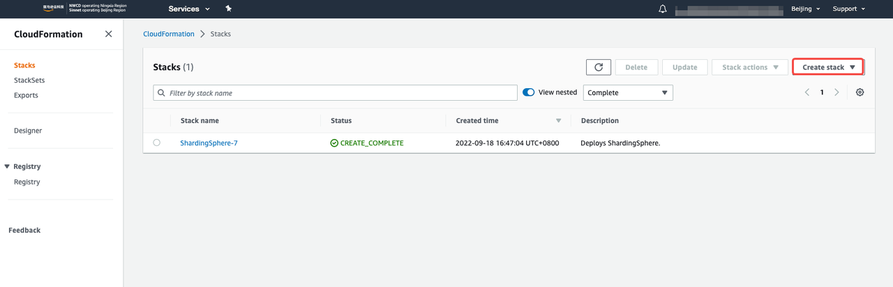

AWS CloudFormation is a simple tool leveraging infrastructure as code to configure and start any environment and infrastructure. The AWS CloudFormation Stack template can help you to quickly start Apache ShardingSphere on AWS.
Before getting started, you need to confirm the following checklist:
As shown in the figure below:


Upload local file cloudformation/apache-shardingsphere-5.2.0.json to CloudFormation, and then click Next.


Fill in the blank items on this page. The required items are ready in the preconditions.

Adding labels to the stack is helpful for subsequent cost analysis.

Review the configuration contents and confirm that all contents meet the expectations before submission.

After a few minutes, the EC2 instance will have started.

Use systemctl status shardingsphere and ./bin/zkServer.sh status to check the running status of components.


Create database sharding_db and add two independent database instances resources. Then create logical table t_order and insert two rows of data. The following inspection results: